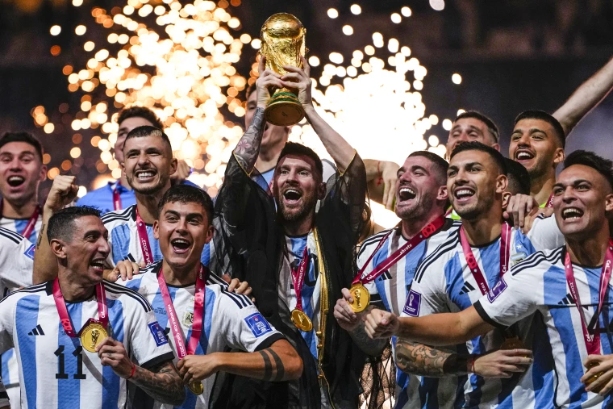

Voetbal123
Naast de landelijke competities heb je ook internationale competities. Hier spelen landen tegen elkaar. Elk land roept 25 spelers op en de landelijke en Europese competities worden tijdelijk gepauzeerd. De 5 grootste Internationale competities zijn:
- Het EK (Europees kampioenschap) in Europa
- De Copa America in Zuid-Amerika
- AFCON in Afrika
- De AFC Asian Cup in Azie
- De CONCACAF Gold Cup in Noord- en Midden-Amerika
Er is ook nog een WK (Wereld Kampioenschap) dat elke 4 jaar word gehouden. Hier spelen landen over heel de wereld tegen elkaar. Het WK is het grootste sport evenement van de wereld. Dit jaar werd het WK door Argentinië gewonnen.
